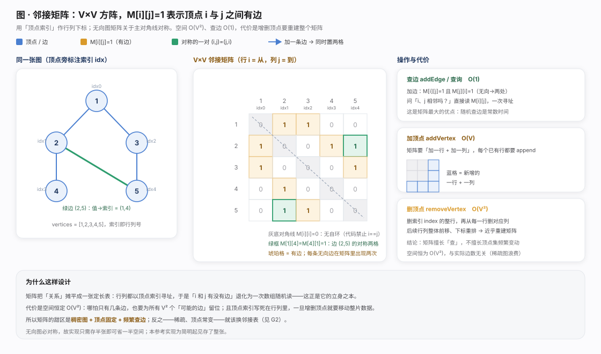
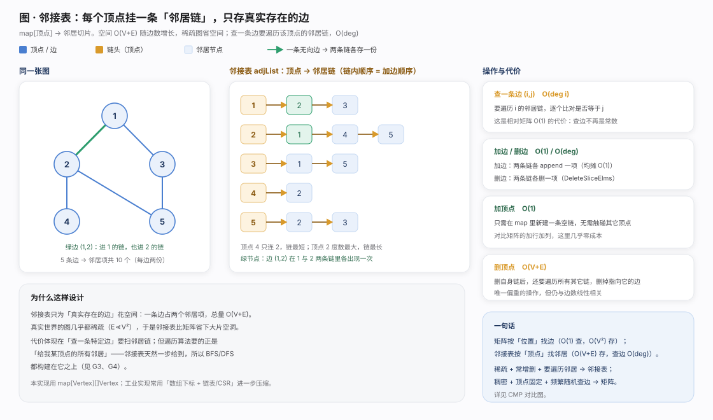
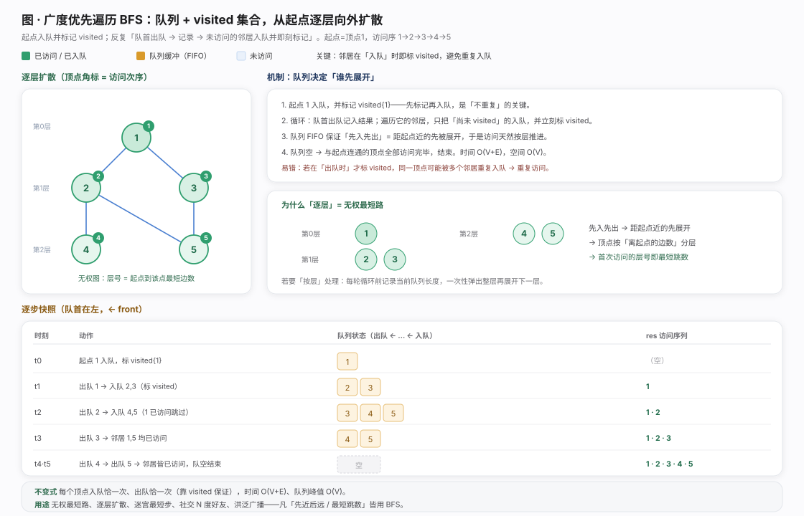
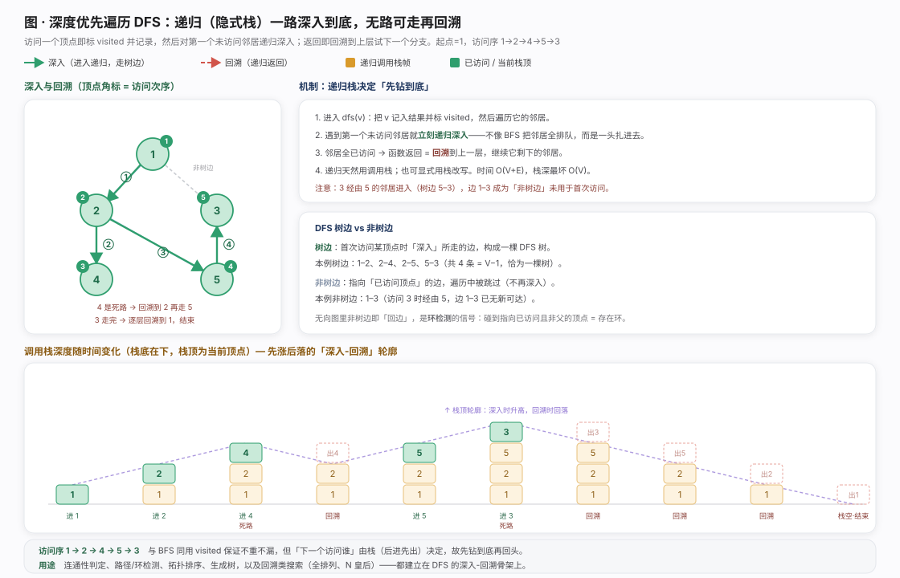
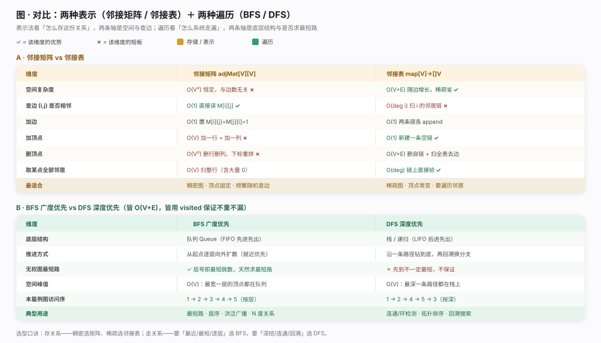

图只声明一组顶点 V 与一组边 E：链表、树都是它的特例，而一般图不限连接数、边可有向/无向、可带权，故建模能力最强（社交、路网、依赖、状态转移）。本篇聚焦无向无权图。围绕图有两个正交问题：怎么存——邻接矩阵（V×V 方阵，位置索引边）vs 邻接表（每顶点挂邻居链，只存真实边），在空间与查边速度上各执一端；怎么遍历——BFS（队列逐层扩散）vs DFS（栈/递归深入回溯）。四者两两配对是图算法地基。主线：用顶点边刻画关系 → 选表示存下 → 用遍历走遍。

邻接矩阵把关系摊成定长二维表，adjMat[i][j]=1 表示 i、j 有边，行列以顶点索引寻址，故「i、j 相邻吗」退化成一次数组随机读——O(1) 查边的立身之本。无向图关于主对角线对称（addEdge 同置 M[i][j]=M[j][i]=1），对角线恒 0（禁自环）。代价有二：空间恒 O(V²)（稀疏图浪费大量存 0），且顶点索引写死使增删顶点昂贵（addVertex O(V)、removeVertex 近乎重建 O(V²)）。甜区是稠密图 + 顶点固定 + 频繁随机查边，否则用邻接表。
package chapter_graph
import "fmt"
/* 基于邻接矩阵实现的无向图类 */
type graphAdjMat struct {
// 顶点列表，元素代表“顶点值”，索引代表“顶点索引”
vertices []int
// 邻接矩阵，行列索引对应“顶点索引”
adjMat [][]int
}
/* 构造函数 */
func newGraphAdjMat(vertices []int, edges [][]int) *graphAdjMat {
// 添加顶点
n := len(vertices)
adjMat := make([][]int, n)
for i := range adjMat {
adjMat[i] = make([]int, n)
}
// 初始化图
g := &graphAdjMat{
vertices: vertices,
adjMat: adjMat,
}
// 添加边
// 请注意，edges 元素代表顶点索引，即对应 vertices 元素索引
for i := range edges {
g.addEdge(edges[i][0], edges[i][1])
}
return g
}
/* 获取顶点数量 */
func (g *graphAdjMat) size() int {
return len(g.vertices)
}
/* 添加顶点 */
func (g *graphAdjMat) addVertex(val int) {
n := g.size()
// 向顶点列表中添加新顶点的值
g.vertices = append(g.vertices, val)
// 在邻接矩阵中添加一行
newRow := make([]int, n)
g.adjMat = append(g.adjMat, newRow)
// 在邻接矩阵中添加一列
for i := range g.adjMat {
g.adjMat[i] = append(g.adjMat[i], 0)
}
}
/* 删除顶点 */
func (g *graphAdjMat) removeVertex(index int) {
if index >= g.size() {
return
}
// 在顶点列表中移除索引 index 的顶点
g.vertices = append(g.vertices[:index], g.vertices[index+1:]...)
// 在邻接矩阵中删除索引 index 的行
g.adjMat = append(g.adjMat[:index], g.adjMat[index+1:]...)
// 在邻接矩阵中删除索引 index 的列
for i := range g.adjMat {
g.adjMat[i] = append(g.adjMat[i][:index], g.adjMat[i][index+1:]...)
}
}
/* 添加边 */
// 参数 i, j 对应 vertices 元素索引
func (g *graphAdjMat) addEdge(i, j int) {
// 索引越界与相等处理
if i < 0 || j < 0 || i >= g.size() || j >= g.size() || i == j {
fmt.Errorf("%s", "Index Out Of Bounds Exception")
}
// 在无向图中，邻接矩阵关于主对角线对称，即满足 (i, j) == (j, i)
g.adjMat[i][j] = 1
g.adjMat[j][i] = 1
}
/* 删除边 */
// 参数 i, j 对应 vertices 元素索引
func (g *graphAdjMat) removeEdge(i, j int) {
// 索引越界与相等处理
if i < 0 || j < 0 || i >= g.size() || j >= g.size() || i == j {
fmt.Errorf("%s", "Index Out Of Bounds Exception")
}
g.adjMat[i][j] = 0
g.adjMat[j][i] = 0
}
/* 打印邻接矩阵 */
func (g *graphAdjMat) print() {
fmt.Printf("\t顶点列表 = %v\n", g.vertices)
fmt.Printf("\t邻接矩阵 = \n")
for i := range g.adjMat {
fmt.Printf("\t\t\t%v\n", g.adjMat[i])
}
}
邻接表不为不存在的边花钱：map[Vertex][]Vertex 每顶点映射一条邻居切片，无向边 (u,v) 在两条链各出现一次，总空间 O(V+E) 随真实边增长，稀疏图由此省下大片空洞。链内顺序即加边先后，直接决定 BFS/DFS 访问次序。操作是矩阵的镜像：加顶点 O(1)、加删边只在两链上增删，偏重的是删顶点 O(V+E)。短板是查特定边要扫邻居链 O(deg)；但遍历真正需要的原语是「给我某顶点所有邻居」，邻接表一步给到，故 BFS/DFS 皆构建其上，也是工程默认（真实场景多稀疏）。
package chapter_graph
import (
"fmt"
"strconv"
"strings"
. "helloalgo/pkg"
)
/* 基于邻接表实现的无向图类 */
type graphAdjList struct {
// 邻接表，key：顶点，value：该顶点的所有邻接顶点
adjList map[Vertex][]Vertex
}
/* 构造函数 */
func newGraphAdjList(edges [][]Vertex) *graphAdjList {
g := &graphAdjList{
adjList: make(map[Vertex][]Vertex),
}
// 添加所有顶点和边
for _, edge := range edges {
g.addVertex(edge[0])
g.addVertex(edge[1])
g.addEdge(edge[0], edge[1])
}
return g
}
/* 获取顶点数量 */
func (g *graphAdjList) size() int {
return len(g.adjList)
}
/* 添加边 */
func (g *graphAdjList) addEdge(vet1 Vertex, vet2 Vertex) {
_, ok1 := g.adjList[vet1]
_, ok2 := g.adjList[vet2]
if !ok1 || !ok2 || vet1 == vet2 {
panic("error")
}
// 添加边 vet1 - vet2, 添加匿名 struct{},
g.adjList[vet1] = append(g.adjList[vet1], vet2)
g.adjList[vet2] = append(g.adjList[vet2], vet1)
}
/* 删除边 */
func (g *graphAdjList) removeEdge(vet1 Vertex, vet2 Vertex) {
_, ok1 := g.adjList[vet1]
_, ok2 := g.adjList[vet2]
if !ok1 || !ok2 || vet1 == vet2 {
panic("error")
}
// 删除边 vet1 - vet2
g.adjList[vet1] = DeleteSliceElms(g.adjList[vet1], vet2)
g.adjList[vet2] = DeleteSliceElms(g.adjList[vet2], vet1)
}
/* 添加顶点 */
func (g *graphAdjList) addVertex(vet Vertex) {
_, ok := g.adjList[vet]
if ok {
return
}
// 在邻接表中添加一个新链表
g.adjList[vet] = make([]Vertex, 0)
}
/* 删除顶点 */
func (g *graphAdjList) removeVertex(vet Vertex) {
_, ok := g.adjList[vet]
if !ok {
panic("error")
}
// 在邻接表中删除顶点 vet 对应的链表
delete(g.adjList, vet)
// 遍历其他顶点的链表，删除所有包含 vet 的边
for v, list := range g.adjList {
g.adjList[v] = DeleteSliceElms(list, vet)
}
}
/* 打印邻接表 */
func (g *graphAdjList) print() {
var builder strings.Builder
fmt.Printf("邻接表 = \n")
for k, v := range g.adjList {
builder.WriteString("\t\t" + strconv.Itoa(k.Val) + ": ")
for _, vet := range v {
builder.WriteString(strconv.Itoa(vet.Val) + " ")
}
fmt.Println(builder.String())
builder.Reset()
}
}
BFS 像水波从起点一圈圈荡开：先访问一步可达、再两步……靠 visited 集合（每顶点只处理一次）与队列（FIFO 定展开次序）：起点入队并立刻标记，循环「队首出队记结果 → 未访问邻居入队并即刻标记」直到队空。必须讲清的易错点：visited 在「入队」时标记而非出队时——否则共同邻居会被重复入队。因「先近后远」，无权图上 BFS 天然求最短路（首次访问的层号即到起点最短边数）。时间 O(V+E)、空间 O(V)。用于最短跳数、迷宫最短步、N 度好友、洪泛广播。
package chapter_graph
import (
. "helloalgo/pkg"
)
/* 广度优先遍历 */
// 使用邻接表来表示图，以便获取指定顶点的所有邻接顶点
func graphBFS(g *graphAdjList, startVet Vertex) []Vertex {
// 顶点遍历序列
res := make([]Vertex, 0)
// 哈希集合，用于记录已被访问过的顶点
visited := make(map[Vertex]struct{})
visited[startVet] = struct{}{}
// 队列用于实现 BFS, 使用切片模拟队列
queue := make([]Vertex, 0)
queue = append(queue, startVet)
// 以顶点 vet 为起点，循环直至访问完所有顶点
for len(queue) > 0 {
// 队首顶点出队
vet := queue[0]
queue = queue[1:]
// 记录访问顶点
res = append(res, vet)
// 遍历该顶点的所有邻接顶点
for _, adjVet := range g.adjList[vet] {
_, isExist := visited[adjVet]
// 只入队未访问的顶点
if !isExist {
queue = append(queue, adjVet)
visited[adjVet] = struct{}{}
}
}
}
// 返回顶点遍历序列
return res
}
DFS 反其道：遇到第一个未访问邻居就立刻递归钻进，深入到无新邻居可走才回溯试剩下分支，天然借用调用栈（进入 dfs(v) 记结果标 visited，返回即回溯）。因优先深入而非就近，原图边可能成「非树边」（如经 5 首次访问到 3，则边 1–3 未用于首次访问）。DFS 与 BFS 同为 O(V+E)、同用 visited 去重，区别仅「下一个访问谁」由栈还是队列决定；不保证最短。它是连通性判定、环检测、拓扑排序、生成树及一切回溯搜索（全排列、子集、N 皇后）的骨架。
package chapter_graph
import (
. "helloalgo/pkg"
)
/* 深度优先遍历辅助函数 */
func dfs(g *graphAdjList, visited map[Vertex]struct{}, res *[]Vertex, vet Vertex) {
// append 操作会返回新的的引用，必须让原引用重新赋值为新slice的引用
*res = append(*res, vet)
visited[vet] = struct{}{}
// 遍历该顶点的所有邻接顶点
for _, adjVet := range g.adjList[vet] {
_, isExist := visited[adjVet]
// 递归访问邻接顶点
if !isExist {
dfs(g, visited, res, adjVet)
}
}
}
/* 深度优先遍历 */
// 使用邻接表来表示图，以便获取指定顶点的所有邻接顶点
func graphDFS(g *graphAdjList, startVet Vertex) []Vertex {
// 顶点遍历序列
res := make([]Vertex, 0)
// 哈希集合，用于记录已被访问过的顶点
visited := make(map[Vertex]struct{})
dfs(g, visited, &res, startVet)
// 返回顶点遍历序列
return res
}
两组对比各一主轴。表示法——「空间 vs 查边」：矩阵 O(V²) 换 O(1) 随机查边、顶点增删贵，宜稠密/顶点固定/频繁查边；邻接表 O(V+E) 换 O(deg) 查边、加顶点 O(1)、取邻居极快，宜稀疏/顶点常变/遍历邻居（多数真实场景，故默认）。遍历——「结构→次序→能解问题」：BFS 队列逐层，无权图天然求最短路、擅层序就近；DFS 栈/递归深挖，擅连通性/环/拓扑/回溯搜索但不保证最短。二者皆 O(V+E)、靠 visited 去重。一句话：存关系看疏密，走关系看目标。详见对比图。
- Cormen, Leiserson, Rivest, Stein.《算法导论》(CLRS) 第 22 章 Elementary Graph Algorithms：图的表示（22.1，邻接矩阵与邻接表）、BFS（22.2）、DFS 与括号定理/边分类（22.3）。 - 《Hello 算法》第 9 章「图」（graph_adjacency_matrix.go / graph_adjacency_list.go / graph_bfs.go / graph_dfs.go 的原始出处与配套讲解）：https://www.hello-algo.com/chapter_graph/ - Sedgewick, R. & Wayne, K. *Algorithms, 4th Edition*, 第 4 章 Graphs：无向图、有向图的邻接表实现与图搜索（BFS/DFS）范式。 - Wikipedia — Graph (abstract data type)：邻接矩阵与邻接表的空间/时间权衡对照。https://en.wikipedia.org/wiki/Graph_(abstract_data_type)